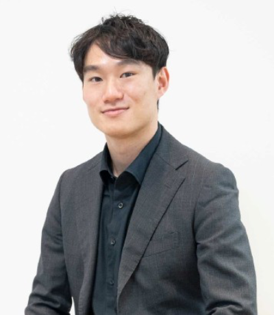
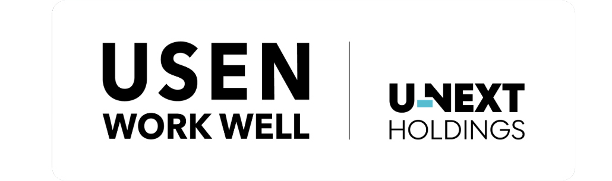
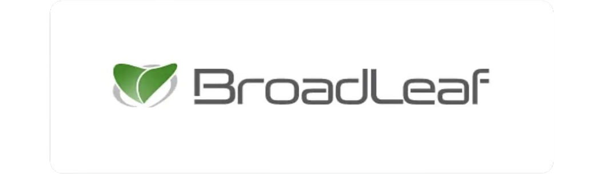
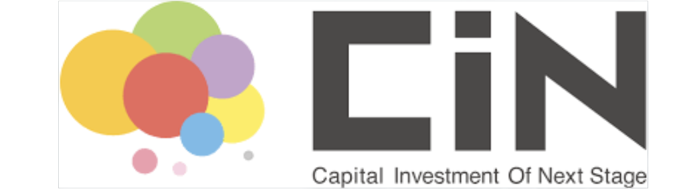
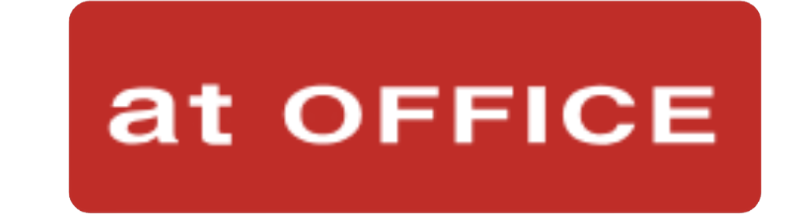
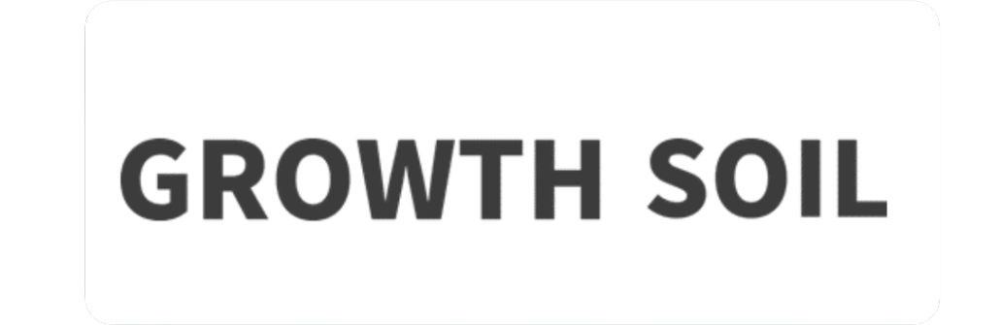
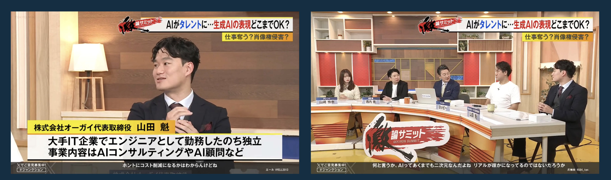
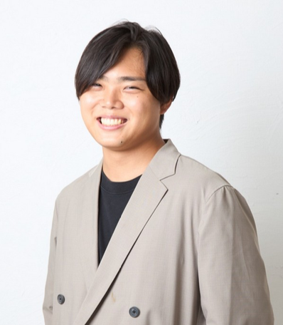
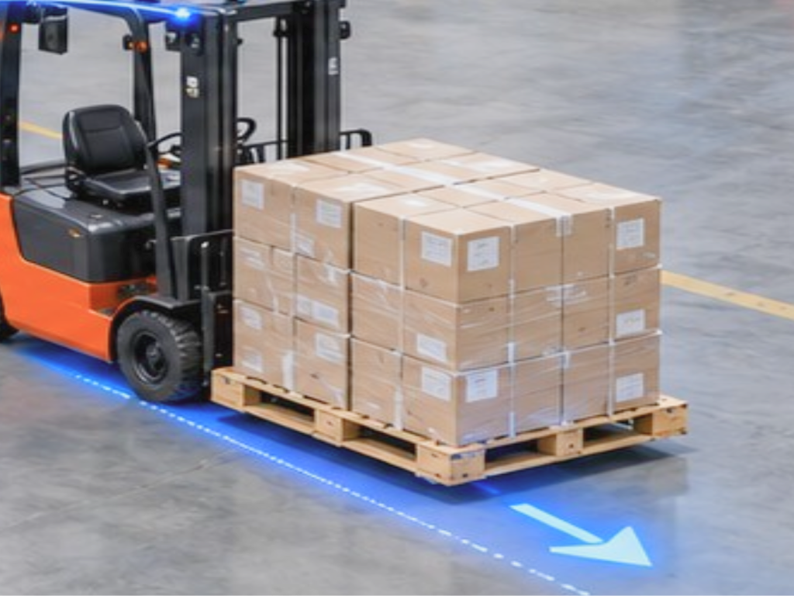

代表取締役 CEO
山田魁
Yamadakai
大学時代にベンチャーキャピタル「SAMURAI INCUBATE」でインターンを経験。その後、宇宙スタートアップ「ElevationSpace」に3人目の創業メンバーとして参画し、創業当初3人だったチームを約1年半で30人規模まで拡大。大手IT企業でエンジニアとして勤務したのち独立し、AIチャットボットの開発などに携わる。現在は約12名のチームを率いながら事業を展開している。

会社説明資料
2016.10 更新
© 2026 ORGAI Prohibition of copying
without permission / prohibition of assignment.
CHAPTER
01

株式会社オーガイ（ORGAI, inc.）
〒600-8008
京都府京都市下京区四条通烏丸東入ル長刀鉾町8
京都三井ビルディング5階
2024 年 4 月
山田魁
AI 受託開発及び生成 AI 特化 SES
12 名（業務委託含む）






代表取締役 CEO
Yamadakai
大学時代にベンチャーキャピタル「SAMURAI INCUBATE」でインターンを経験。その後、宇宙スタートアップ「ElevationSpace」に3人目の創業メンバーとして参画し、創業当初3人だったチームを約1年半で30人規模まで拡大。大手IT企業でエンジニアとして勤務したのち独立し、AIチャットボットの開発などに携わる。現在は約12名のチームを率いながら事業を展開している。

弁護士 / リーガルアドバイザー
HashimotoYuya
森・濱田松本法律事務所を退職後、個人事務所を立ち上げ独立し、弁護士業務に従事。弁護士資格と弁護士業界での深いネットワークから士業の問題を深く捉え、法律実務の現場を知り尽くした製品設計能力を強みとする。2025年10月に株式会社SamurAI DXを山田魁とともに共同創業。慶應義塾大学法学部卒、同大学院法学研究科中退。2020年12月東京弁護士会弁護士登録。

CHAPTER
02
現場は、人を集められない。集まるほど、荷下ろしの単価は上がっていく。
若者がブルーワークに就きたがらず、現場は「そもそも人が来ない」状態にある。募集を続けても、荷下ろしの列は埋まらない。
人が来ないほど単価は上がり、そのコストは毎年の見積に織り込まれていく。人を送り続ける限り、構造は変わらない。
足りないのは人手だけではない。人件費が上がり続ける構造のまま、現場が置かれている。
市場は大きく、作業は置き換えやすく、海外ではすでにロボットが荷下ろしを始めている。
01 市場
2兆円
世界のデバンニング人件費は約2兆円。国内はそのうち約2,000億円。取りにいく10%でも、約200億円の範囲がある。
02 作業
人が集まりにくい条件が、そのまま揃っている。定型に近く、重い。有資格者を待ち続ける工程ほど、ロボットに置き換えやすい。
03 先行
国内は「人を送る」か「ロボットを売る」。時給で代行する枠が空いている。
CHAPTER
03
荷下ろしロボットの派遣。
時間単価 1,000 円で顧客にロボットを貸し出す。
顧客が買うのはロボットではない。荷下ろしが終わること。
単価は時間。1,000円で、現場にロボットを出す。

コンテナ荷下ろし（デバンニング）と
フォークリフト作業の 2 工程に絞る
1
重い・単純・有資格者が足りない。現場データとオペレーションを貯める。
2
同一顧客の構内フォークリフト作業へ広げる。同じく重い・単純・有資格者不足。
ロボットを時給 1,000 円で派遣する。
| 項目 | 数値 |
|---|---|
| 単価 | 時給 1,000 円 |
| 稼働 | 8 時間 × 20 日 = 月 160 時間 |
| ロボット 1 体あたり | 月 16 万円／年 192 万円 |
| 1 拠点あたり 5 体 | 月 80 万円／年 960 万円 |
| 人のオペレーション込み（1 拠点） | 月 110 万円／年 1,320 万円 |
| 1 社 20 拠点（100 体） | 年 1.92 億円 |
CHAPTER
04
国内は「人を送る」か「ロボットを売る」の二択で、海外で主流の RaaS（従量課金でロボットが荷下ろしを代行する）モデルが空白。
| カテゴリ | 主なプレイヤー | 売り方 | 当社が勝てる理由 |
|---|---|---|---|
| 人力の荷下ろし代行（国内） | ハンズミー、埼玉デバンニングサービス、バン・デバン、デバンの達人 | 400 万円（据え置き） | 同じ「業務単位の請負」で、原価が人ではなくロボット。人手確保競争から降りられる。 |
| 国内デバンロボット | Mujin「TruckBot」、川崎重工「Vambo」、XYZ Robotics「RockyOne」 | 2〜3 千万円で販売 | 数千万円の設備投資ができる大手 3PL・港湾物流に顧客が限られる。当社は時給課金で中堅・D2C 倉庫を開ける。 |
| 海外フィジカル AI | Pickle Robot（UPS 400 台・$120M、郵船ロジに RaaS 導入）、Boston Dynamics「Stretch」（DHL、最大 1,000 台 MOU）、Anyware Robotics「Pixmo」、Slip Robotics（完全 RaaS） | 1,200 万円 | モデルの正しさは海外で実証済み。国内には未参入で、商習慣・中小倉庫対応で先に地場を取れる。 |
| スポットワーカー | タイミー等 | 時給 1,378 円（本人）／請求 2,000 円超 | 半額・無欠勤・品質均一。 |
当社の位置は「海外 RaaS のモデル」×「国内人力代行の売り方」。ロボットを売らず時給 1,000 円で成果を売る。国内ロボット導入は大手物流（上組・西濃運輸・丸紅ロジ・ロジスティード）に集中し、中堅倉庫・D2C 自社倉庫は人力代行しか選択肢がない。三菱商事 Roboware の物流ロボットレンタルは月 17〜24 万円/台。当社は月 16 万円で、オペレーション込み。国内フィジカル AI スタートアップ（atom 等）とは、荷下ろし代行 BPO という事業定義そのものが違う。
派遣したロボットから現場データが毎日返ってくる。これが時間とともに効く唯一の資産。
コンテナ内の積み付けパターン、荷姿・重量・崩れ方、ドック形状、テレオペの介入ログ（人が助けた瞬間＝失敗事例）。
介入ログを学習に回すほど自律率が上がる。1人が見られる台数が増えると原価が下がる。粗利 19% から 50% を埋めるのは値上げではなくデータ。
売り切りモデルは納品先の稼働データが手元に残らない。時給課金で自社がロボットを保有し続けるからこそデータが溜まる。
ある倉庫で湿めたモデルは、同じ荷物を扱う同業他社にそのまま効く。2社目以降の立ち上げコストが下がり、参入した業界から順に寡占できる。
ハードは深圳から仕入れ、自社開発はソフトウェアとデータに集中する。競争優位を機体には置かない。
CHAPTER
05
フィジカル AI としてのトラクションはまだない。
一方、別事業の SIer で年商 1 億円を作った実績がある。
売上 40 億円作れば
プライムに時価総額 1,000 億円で上がることができる。
| 時期 | 目標 |
|---|---|
| 2027 年（直近 1 年） | 顧客 10 社、ロボット 10 台稼働（売上約 0.2 億円） |
| 2030 年（6 期目） | ロボット約 625 体・顧客 6 社／売上約 12 億円 時価総額 300 億円でグロース上場 |
| 2034 年（10 期目） | ロボット約 2,000 体・顧客 21 社／売上約 40 億円 時価総額 1,000 億円でプライム上場 |
※すべて時給 1,000 円（1 体あたり年 192 万円）で計算。1 社 = 20 拠点 × 5 体 = 100 体。
調達額 3,000 万円の内訳
9 月〜 1 月：受注 1 件と初デリバリーまでを最短で回す
ロボットをアームと台車で組み立てる。エンジェル投資家と壁打ち。
深圳に行く。ひたすら商談。投資家とディスカッションを開始。
受注し、自分とロボットでデリバリーする。なんとしても成果を出す。
フォークリフトの免許を取得。ロボット台車を作る。
実務経験を積んだ現場に「ロボットを持って行っていいか」と再提案。フォークリフトの実務経験を積み、LPで検証を始める。1件受注し、深圳でAGFを150万円で仕入れ、独占契約を打診する。
複数現場へ投入する資金を確保する。投資家リスト250社に当たり、着金させる。ロボットを一気に仕入れて高速展開し、複数拠点のデリバリーに向けフォークリフト経験者を採用する。
CHAPTER
06
2020年からベンチャーキャピタルに身を置き、SaaS・Web3・AIと業界の変遷を一貫して見てきました。自身もVC、宇宙スタートアップ、Webエンジニア、SIerと事業側を経験しています。累計100億円を調達したElevationSpaceの創業メンバーとして、業界の最先端にいた経験があります。
深圳から仕入れる方針です。機種は未確定で、10月末の深圳の展示会で選定してきます。
普通免許があれば5日間・3〜4万円で取得できます。10月末に取得予定です。
います。ただし各社2〜3千万円のロボット販売モデルで、導入できる現場が限られます。当社は時給課金のため導入が容易です。加えて国内市場が2,000億円あるため、SaaSやSIと同様、競合の数より市場の大きさが効きます。
問題ありません。タイミーの小川氏、サイバーエージェントの藤田氏、堀江氏など、必ずしも領域のバックグラウンドを持たずに数千億規模を作った起業家は多くいます。効くのは時代を読む力です。
PLの作り方も商売の本質も同じです。本質は「顧客を開けること」であり、それ以外は後からどうにでもなります。